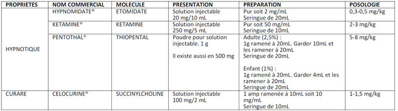

Induction à séquence rapide
AdulteSpécialité : orl /
Points importants
- L’intubation en urgence est toujours considérée comme celle d’un patient ayant l’estomac plein, donc à haut risque d’inhalation pulmonaire
-
La sédation pour l’intubation d’urgence permet de :
- faciliter la réalisation de l’intubation
- limiter le risque d’inhalation du contenu gastrique
- diminuer les risques d’hypoxie et d’HTIC lors de la laryngoscopie
- assurer le plus grand confort au patient durant cette procédure invasive
-
La sédation en IV doit :
- avoir un délai d’action bref
- être rapidement réversible
- être associée à un minimum d’effets indésirables
- L’induction en séquence rapide (ISR) est recommandée par les différentes sociétés savantes, telles que la Société Française d’Anesthésie et de Réanimation (SFAR), la Société de Réanimation de Langue Française (SRLF) et la Société Française de Médecine d’Urgence (SFMU)
- L’ISR consiste en l’administration quasi-simultanée d’un hypnotique (étomidate [Hypnomidate®] ou kétamine [Kétamine®] : hypnotiques de choix) et d’un curare (succinylcholine [Célocurine®] curare de référence) entraînant une narcose d’installation rapide et un relâchement musculaire dans le but de faciliter l’introduction de la sonde d’intubation dans la trachée
- La kétamine est l’agent d’induction de choix avant l’âge de 2 ans, en cas d’état de choc, de tamponnade et d’asthme aigu grave
- Le thiopental (Pentothal®) est souvent utilisé en cas d’état de mal épileptique
- En cas de contre-indication à la succinylcholine, le rocuronium (Esmeron®) curare non dépolarisant peut être utilisé
Indications
- Intubation trachéale en présence d’une activité cardiaque spontanée dans une situation de détresse vitale, considérée comme estomac plein (pré hospitalier, urgences)
Contre-indications
- Patient en arrêt cardiaque
Contre-indications à l’utilisation de la succinylcholine
- Hyperkaliémie
- Atteinte musculaire squelettique d’origine congénitale
- Syndrome de dénervation étendu datant de plusieurs heures (hémiplégie, paraplégie ou tétraplégie)
- Brûlés graves après les 24 premières heures
- Polytraumatisés avec atteinte musculaire durant les premiers jours
- Déficit en pseudocholinestérases plasmatiques
- Plaie du globe oculaire
- Antécédents d’allergie à la succinylcholine
- Antécédents personnels ou familiaux d’hyperthermie maligne
Contre-indications à l’utilisation de l’hypnotique
-
Etomidate :
- enfant de moins de 2 ans
- hypersensibilité reconnue à l’étomidate
-
Kétamine :
- HTA sévère menaçante
- porphyrie
- hypersensibilité reconnue à la kétamine
-
Thiopental :
- asthme sévère / état de mal asthmatiforme
- insuffisance cardiaque
- hypovolémie non compensée
- porphyrie
- hypersensibilité aux barbituriques
Présentation du matériel
- Monitorage (électrocardioscope, défibrillateur, pression artérielle non invasive [PNI], oxymétrie [SpO2], capnographe)
- Voie veineuse périphérique de bon calibre
- Source d’oxygène
- Source d’aspiration et sonde d’aspiration de gros diamètre
- Ballon autoremplisseur à valve unidirectionnelle (BAVU), poche de réserve, filtre antibactérien, masque facial transparent
-
Plateau d’intubation :
- laryngoscope avec lames métalliques de tailles différentes
- sondes d’intubation de différents calibres
- seringue de 10mL
- manomètre
- système de fixation (sparadrap ou cordon)
- stéthoscope
- piles de rechangecanule de Guédel
- pince de Magill, mandrin souple
- long mandrin béquillé (bougie d’Eschmann)
- masque laryngé FastrachTM
- kit de cricothyroïdotomie
- Hypnotique et curare nécessaires à l’ISR
- Produits nécessaires à l’entretien de l’anesthésie
Description de la technique
La mise en œuvre d’une ISR suit un ordre chronologique bien précis :
Equipement prêt à l’emploi et vérifié
- Voie d’abord sécurisée
- Matériel d’intubation-ventilation et d’aspiration
- Monitorage cardio-vasculaire incluant scope, PNI, oxymétrie de pouls et capnographe
- Techniques alternatives à la laryngoscopie directe
Position du patient
-
Position amendée de Jackson :
- surélévation de la tête
- hyperextension en l’absence de lésions rachidiennes
Préoxygénation
- Faire respirer le patient dans un masque étanche alimenté en oxygène pur pendant 3 min
- Assister le patient le moins possible
- Contrôler l’absence de fuite
- Ne pas retirer le masque avant l’apnée
Induction
- Injection intraveineuse directe de l’hypnotique suivie immédiatement de la succinylcholine
 fichier_712 Tableau Tableau ISR
Manœuvre de Sellick
- Appliquer une pression cricoïdienne (manœuvre de Sellick) dès la perte de conscience du patient et en l’absence de lésion rachidienne cervicale ou de vomissements
- Maintenir la pression jusqu’au gonflement du ballonnet de la sonde endotrachéale
Intubation orotrachéale
- Procéder à l’intubation orotrachéale par voie orale sous laryngoscopie directe à la fin des fasciculations induites par la succinylcholine
- Repères sondes : homme 23 cm et femme 21 cm
- Ventiler le patient manuellement à l’aide d’un ballon connecté à la sonde d’intubation avec un haut débit d’oxygène
- Vérifier la bonne position de la sonde par la courbe de capnographie (4 cycles) ou le test à la seringue
- Gonflage du ballonnet de la sonde et vérification systématique de la pression du ballonnet (± 30 cmH2O)
- Déceler une intubation sélective par l’auscultation pulmonaire
- Raccorder le patient à un dispositif de ventilation mécanique après avoir fixé la sonde
Sédation d’entretien
-
Est à adapter en fonction du contexte pathologique et des conséquences cardiovasculaires :
- Hypnovel ® 2 à 10mg/h + Sufentanyl® 5 à 10 µg/h
- ou Kétamine ® 1 mg/kg/h + Sufentanyl® 5 à 10 µg/h
- ou Penthotal ® 20mg/kg/24h + Sufentanyl® 5 à 10 µg/h
- en l’absence de Sufentanyl®, utiliser Fentanyl® 50 à 100 µg/h
- En pratique, l’instabilité cardiocirculatoire doit conduire systématiquement à diminuer la posologie des agents hypnotiques et analgésiques
- En cas d’HoTA : remplissage vasculaire ± éphédrine
Précautions d’emploi
- Patient non ventilable : évaluer le bénéfice/risque de l’ISR
-
Choix de l’hypnotique :
- Hypnomidate® : méfiance chez les patients septiques à cause de l’insuffisance surrénalienne qu’il peut causer (niveau de preuve faible)
- Kétamine® : les risques psychodysleptiques au réveil doivent être prévenus par l’entretien rapide de la sédation par des benzodiazépines ; précautions d'emploi de la kétamine chez les patients présentant une HTA ou insuffisance cardiaque sévère, monitorage cardiovasculaire continue du patient pendant la procédure d'intubation
- Pentothal® : la posologie de thiopental est individuelle ; il faut donc trouver la dose anesthésique minimale pour chaque patient, ce qui nécessite une vitesse d’injection très lente
- Interrompre la manœuvre de Sellick en cas d’efforts de vomissement ou de difficulté d’intubation
- Maîtriser les techniques alternatives à l'intubation et, idéalement, avoir la possibilité d'un renfort médical en cas d'intubation difficile ou impossible
Complications
- Désaturation profonde et prolongée : en cas d’échec ou de difficulté d’intubation, ventiler manuellement, appeler à l’aide, prioriser le maintien de l’oxygénation entre les tentatives et recourir aux techniques alternatives
-
Complications hémodynamiques : à traiter de manière symptomatique :
- atropine en cas de bradycardie
- remplissage vasculaire et utilisation immédiate d’éphédrine (3 à 6 mg en IVD toutes les 5 minutes) en cas d’HoTA
- adrénaline en cas de survenue d’un arrêt cardiaque
Surveillance
Le monitorage en cas d’intubation est essentiel
- Surveillance scopique : rythme cardiaque et mesure non invasive automatisée de la PA, témoins soit d’une insuffisance de sédation, soit d’un surdosage
- Surveillance de la SpO2 par un oxymètre de pouls : permet d’arrêter précocement une tentative d’intubation infructueuse
- Surveillance quantitative continue du CO2 (ET CO2) expiré avec analyse des courbes : permet un diagnostic immédiat d’intubation oesophagienne en cas d’absence de CO2 expiré
- Surveillance de la sonde et des raccords
Auteur(s) : Patricia JABRE